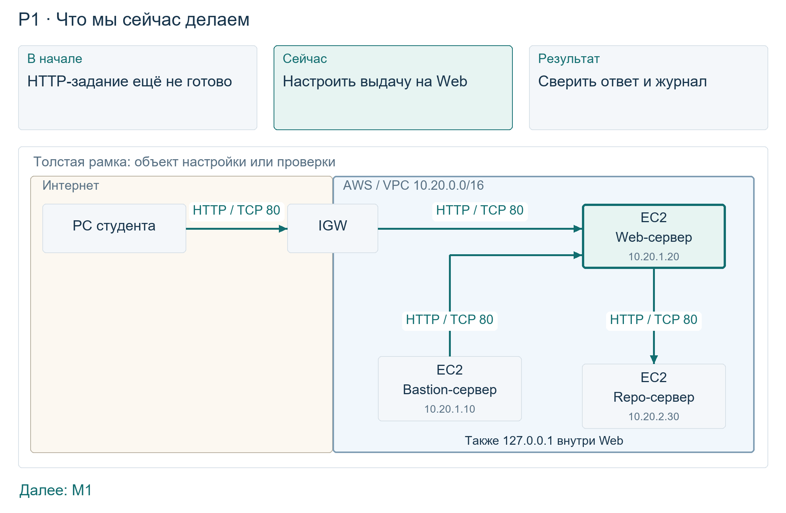
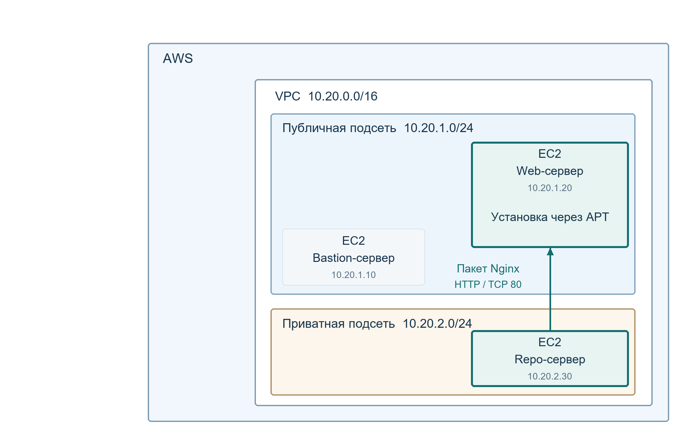
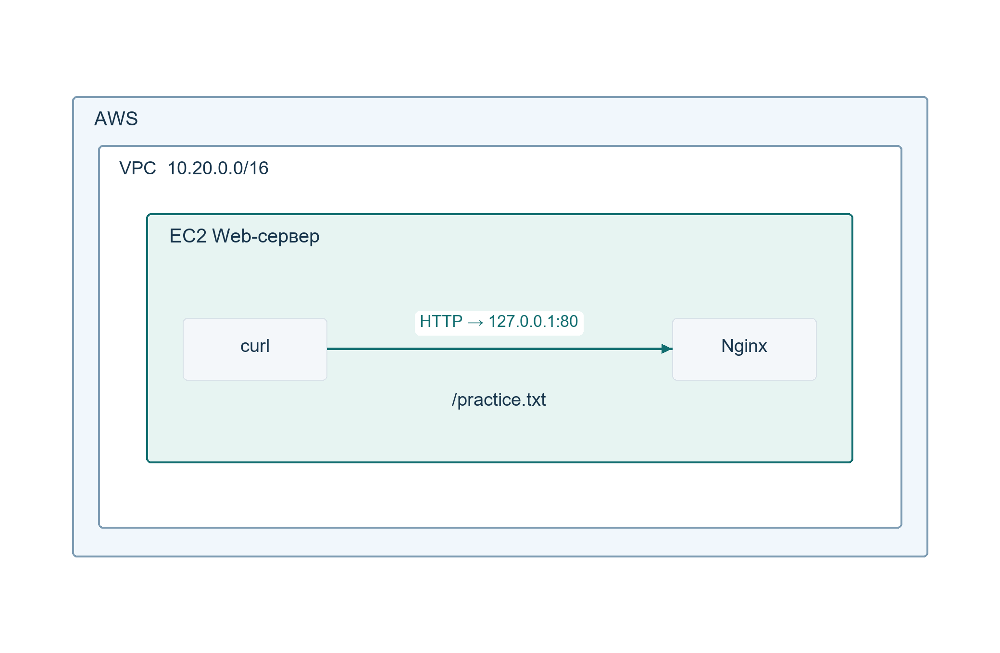

P1 Выдача статического файла по HTTP
Практика P0–P6 · Задания M0–M5
Связанное задание: M1.
Что изучаем
Связать Nginx, файл, прослушивание порта, HTTP-ответ и access log.
Задание
Настройте выдачу файла /var/www/html/practice.txt с ответом HTTP 200.
Схема задания

- File: /var/www/html/practice.txt
- URL path: /practice.txt
JDU WEB-02 practice: HTTP response verified.
Что сделать в Practice1
Настройте Nginx для выдачи текста файла по HTTP на TCP-порту 80 по пути /practice.txt. Выполните запросы из терминалов Web-сервера и бастиона, затем найдите их в журнале доступа Nginx.
Пример решения (порядок действий)
P1.1 Установить Nginx из внутреннего APT
Среда выполнения:
SSM-терминал Web-сервера: ssm-user
Цель и действия:
Подключитесь к Web-серверу через SSM, как в P0. Скачайте пакет Nginx с внутреннего Repo-сервера (10.20.2.30) и установите его на Web-сервере.

Команды: нумерация внутри этого шага
# 1. Обновить список пакетов с внутреннего сервера.
sudo apt-get update
# 2. Установить nginx с внутреннего сервера пакетов.
sudo apt-get install nginx
Смысл команд и настроек:
apt-get update обновляет список доступных пакетов. apt-get install nginx использует этот список для установки Nginx.
Ожидаемый результат и его смысл:
При обновлении списка в строке внутреннего сервера появляется Hit: или Get:. Сообщение N: Ignoring file ... ubuntu.sources.jdu-disabled означает, что APT пропустил стандартный источник Ubuntu, отключённый при начальной настройке. Если ошибок загрузки или проверки подписи нет, продолжайте установку. Если APT запросит подтверждение, введите Y.
Если не получилось:
Если не удалось получить список пакетов, проверьте состояние и IP-адрес внутреннего сервера пакетов.
P1.2 Создать точный текст и права файла
Среда выполнения:
SSM-терминал Web-сервера: ssm-user
Цель и действия:
Запишите текст в рабочий файл, затем скопируйте его в каталог, из которого Nginx выдаёт файлы.
Команды: нумерация внутри этого шага
# 1. Перейти в свой домашний каталог.
cd ~
# 2. Создать рабочий каталог; существующий сохранить.
mkdir -p jdu-web-practice/p1
# 3. Перейти в рабочий каталог jdu-web-practice/p1.
cd jdu-web-practice/p1
# 4. Показать текущий рабочий каталог.
pwd
# 5. Открыть practice.txt: ввести текст, сохранить и выйти.
nano practice.txt
Текст для ввода в nano
JDU WEB-02 practice: HTTP response verified.
Введите в nano ровно эту строку и нажмите Enter в конце. Сохраните файл клавишами Ctrl+O, затем Enter, и выйдите через Ctrl+X. В терминале продолжите с шага 6.
Команды: нумерация внутри этого шага
# 6. Скопировать practice.txt в каталог публикации Web-сервера.
sudo cp practice.txt /var/www/html/practice.txt
# 7. Назначить root владельцем и группой скопированного файла.
sudo chown root:root /var/www/html/practice.txt
# 8. Установить для скопированного файла права 0644.
sudo chmod 0644 /var/www/html/practice.txt
# 9. Прочитать владельца, группу, права и имя указанных файлов.
stat -c '%U:%G %a %n' /var/www/html/practice.txt
# 10. Прочитать /var/www/html/practice.txt без изменения.
cat /var/www/html/practice.txt
Смысл команд и настроек:
cp копирует текст в файл для публикации. chown root:root назначает root владельцем и группой копии. chmod 0644 даёт владельцу право чтения и записи, а группе и остальным - право чтения.
Ожидаемый результат и его смысл:
Отображаются владелец, группа и права root:root 644 и строка JDU WEB-02 practice: HTTP response verified..
Если не получилось:
Если nano ещё открыт, сохраните файл и выйдите перед следующей командой.
P1.3 Проверить Web root и запустить сервис
Среда выполнения:
SSM-терминал Web-сервера: ssm-user
Цель и действия:
Выведите действующую конфигурацию командой nginx -T и найдите root /var/www/html и listen 80 в /etc/nginx/sites-enabled/default. При необходимости отредактируйте файл в sudo nano и перечитайте настройки после успешной проверки синтаксиса.
Команды: нумерация внутри этого шага
# 1. Вывести полную конфигурацию Nginx и посмотреть, как она записана.
sudo nginx -T
# 2. Проверить синтаксис и файлы конфигурации Nginx.
sudo nginx -t
# 3. Запустить nginx сейчас и включить автозапуск.
sudo systemctl enable --now nginx
# 4. Перечитать настройки nginx без остановки.
sudo systemctl reload nginx
# 5. Прочитать текущее состояние nginx.
systemctl is-active nginx
# 6. Убедиться, что Nginx слушает TCP-порт 80, например 0.0.0.0:80.
sudo ss -lntp
Смысл команд и настроек:
Nginx -T выводит конфигурацию, -t проверяет синтаксис. В systemctl enable включает запуск при загрузке, --now запускает сейчас. После сохранения файла проверьте reload, состояние службы и порт.
Ожидаемый результат и его смысл:
Проверка синтаксиса выводит syntax is ok и test is successful, а служба показывает active. Проверьте, что Nginx слушает TCP-порт 80, например 0.0.0.0:80.
Если не получилось:
При ошибке синтаксиса исправьте файл и строку, указанные в выводе nginx -t.
P1.4 Посмотреть ответ на самом Web
Среда выполнения:
SSM-терминал Web-сервера: ssm-user
Цель и действия:
Отправьте HTTP-запрос командой curl в терминале Web-сервера. Адрес 127.0.0.1 указывает на этот же сервер.

Команды: нумерация внутри этого шага
# 1. Отправить HTTP-запрос по адресу http://127.0.0.1/practice.txt.
curl -i http://127.0.0.1/practice.txt
Смысл команд и настроек:
127.0.0.1 - адрес обратной петли. Запрос приходит в Nginx на том же Web-сервере.
Ожидаемый результат и его смысл:
Отображаются HTTP 200 и строка из practice.txt: JDU WEB-02 practice: HTTP response verified.
Если не получилось:
Если показано «Welcome to nginx», проверьте путь /practice.txt в команде curl. По адресу http://127.0.0.1/ может открыться начальная страница Nginx.
P1.5 Проверить тот же файл с бастиона
Среда выполнения:
SSM-терминал бастиона: ssm-user
Цель и действия:
Подключитесь к бастиону через SSM и отправьте HTTP-запрос к Web-серверу командой curl. Из внутренней сети используйте внутренний IP Web-сервера 10.20.1.20.

Команды: нумерация внутри этого шага
# 1. Отправить HTTP-запрос по адресу http://10.20.1.20/practice.txt.
curl -i http://10.20.1.20/practice.txt
Смысл команд и настроек:
Адрес назначения меняется на внутренний IP Web-сервера. Путь к файлу остаётся тем же, что и в P1.4, - /practice.txt.
Ожидаемый результат и его смысл:
Отображаются HTTP 200 и строка JDU WEB-02 practice: HTTP response verified.
P1.6 Связать запрос с журналом и отправить
Среда выполнения:
SSM-терминал Web-сервера: ssm-user
Цель и действия:
Вернитесь на Web. В access log найдите время, IP клиента, путь и статус. Это доказательство обработки запроса, не только наличия файла. После exit в CloudShell выберите P1 в Web Portal на PC и запустите проверку.
Команды: нумерация внутри этого шага
# 1. Прочитать последние 20 строк access log и найти свой HTTP-запрос.
sudo tail -n 20 /var/log/nginx/access.log
# 2. Закрыть сеанс текущего сервера и вернуться в CloudShell.
exit
Смысл команд и настроек:
Сопоставьте время, путь и статус в access log с недавним curl. Tail читает последние строки и не меняет журнал. После exit проверьте P1 в браузере PC.
Ожидаемый результат и его смысл:
На экране показываются результаты восьми проверок и число выполненных критериев. Система автоматически проверяет HTTP-доступ по публичному IP.
Если не получилось:
Если идёт обработка, обновите результат. При ошибке сохранения прочитайте причину. Не меняйте ожидаемый текст checker.
Пример чтения вывода (не вводить)
HTTP/1.1 200 OK
JDU WEB-02 practice: HTTP response verified.
Показаны только нужные строки; реальный ответ содержит и другие заголовки. Проверьте 200, текст и путь/статус в access log.
Проверка понимания (без баллов)
На Web ответ 200, а с бастиона соединение не проходит. Что проверить до изменения файла?
Объяснение:
Адрес назначения, адрес/порт прослушивания и разрешение пути bastion → Web. Содержимое файла и доступность - разные проверки.